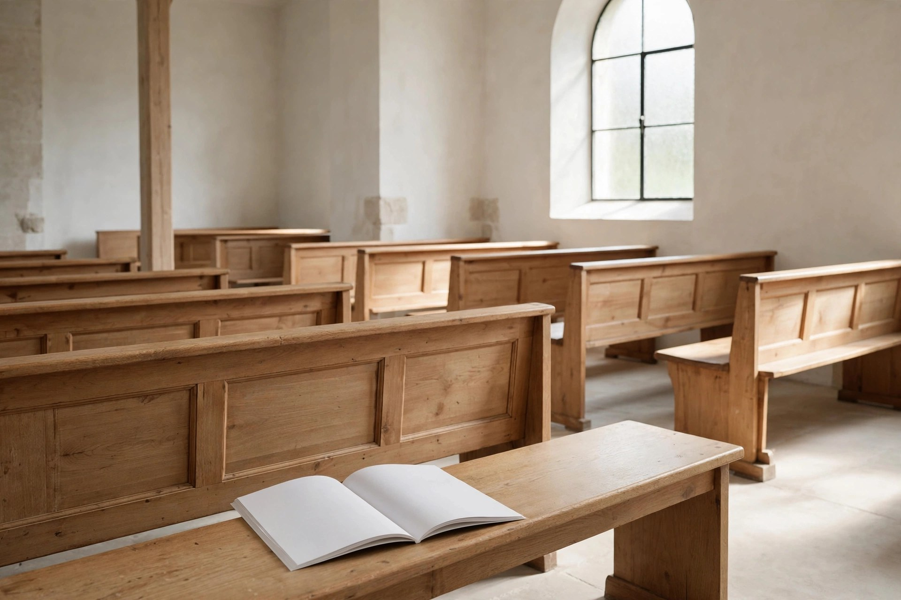

Church and ceremony dozing etiquette: a respectful guide for the very tired

Every other guide on this site is about rooms where dozing is, at worst, a family legend. This one is about rooms that deserve better: services, weddings, funerals, baptisms, graduations. The humour here comes with a governor on it, because the goal is not really to sleep through a ceremony. The goal is to be so well prepared, so thoughtfully seated, and so quietly self-managed that if sleep does ambush a tired guest, it harms nothing — not the occasion, not the people beside them, and not the memory being made in the front rows.
First, the honest starting point
Drifting off in a place of worship is one of the oldest documented audience problems in the world. The Acts account tells of a young listener named Eutychus who sat in a window during a talk that ran on until midnight, sank into a deep sleep, and fell from the third storey. He was taken home alive afterwards, which makes the story both a warning and a comfort: the talk was long, the room was lit by many lamps, and the sleeper was not treated as a villain — he was gathered up and cared for. Two thousand years of warm rooms and long sermons later, the ingredients have not changed. Writers on the subject still name the same recipe: a long week, a warm and quiet room, and a person who gave the night before everything they had. One frank commentary adds the part nobody says aloud — that an unprepared, flatly delivered talk can lose a room all by itself. In other words: an eyelid failure in a pew is a human event, not a character verdict. It is still worth managing well.
Prevention that respects the occasion
Etiquette begins the day before, not in the pew. The stay-awake guidance written for worshippers converges on a few unglamorous moves:
Protect the night before. Resting ahead of time is the first suggestion in the church-specific advice, including not making very late Saturday nights a habit before a Sunday service. For a one-off ceremony, the same logic applies in miniature: the night before a wedding or a funeral is not the night to finish a project, drive half the night, or celebrate early.
Use a Saturday — or pre-ceremony — nap deliberately. The church guidance suggests a Saturday afternoon nap as preparation, and the timing science is on its side: for people on a daytime schedule, a secondary wave of sleep pressure arrives in the afternoon, roughly between 2 and 4 p.m. A short, planned rest in that window tops up the tank without stealing the evening. The same science carries the warning: the longer you have been awake, the deeper the pull — so arriving at a ceremony already running on fumes means the warm room will finish the job.
Give yourself a job. Taking notes and actively participating are the engagement tactics the worship guidance recommends, and they translate beautifully to ceremonies: follow the order of service, read the hymn words instead of mumbling them, keep the program open at the right page. A guest with a small task is a guest whose brain has a reason to stay in the room.
Eat, and arrive unhurried. A rushed, hungry arrival in a warm seat is a nap with a countdown timer. Arrive early enough to greet people, settle children, find the facilities, and sit down calm — the scrambling itself burns the alertness the ceremony will need.
The seating etiquette map
Where a tired guest sits is an ethical decision disguised as a logistical one. The front rows belong to family, participants, and anyone in photographs. The church stay-awake advice suggests the front for regular worshippers who want the discipline of visibility — and that is exactly why a guest who knows they are fragile should not take a front seat at someone else's big occasion. Apply the framework:
You are family or in the ceremony: front is your post. Sleep is not an option there, so prevention has to carry the whole day — nap beforehand, sit beside a trusted relative who has been briefed with one sentence (“elbow me if my head drops”), and stand whenever the ceremony stands. Standing moments are free alertness; use every one.
You are a close friend: mid-room, aisle side. Close enough to be visibly present for the photographs and the greeting line, far enough that a momentary eyelid dip is visible to nobody except, possibly, the usher — and ushers have seen everything. The aisle seat matters: it is the only seat from which a quiet, dignified exit to the lobby is possible without a climbing expedition over six laps.
You are a plus-one or distant guest: toward the back, near a wall or a pillar, is both humble and wise. Back seats are where tired guests do the least possible harm, where a whispered check-in with a companion bothers no one, and where stepping out for air between segments reads as nothing at all.
Never: the seat directly behind the official photographer, in the centre of a row at a funeral, or anywhere a child in the ceremony can see you. Children, as every guide on this site notes, have perfect recall for exactly the moment an adult's eyes closed.
If you drift: the quiet recovery protocol
Despite everything, it happens: the head dips, the program slides, a small eternity passes. Recovery etiquette is about scale — the sin is never the ten seconds of sleep, it is the flailing cover story afterwards. Run the protocol:
- Surface slowly. No gasp, no startled upright jerk, no whispered apology tour. Open the eyes, lift the head at the pace of a person who was merely looking down at the program, and refocus on the speaker.
- Re-anchor with the order of service. Find the current hymn, reading, or moment on the printed program. Knowing where the ceremony is restores composure faster than anything, and composure reads as attentiveness.
- Change one physical thing. Shift position, uncross and recross the legs, take a slow sip of water if a bottle is discreetly at hand, straighten the back. Small movement tells the body the emergency is over.
- If it happens a second time, leave quietly at the next natural break. Aisle seat, slide out during a hymn, applause, or transition, get air and cold water in the lobby, and return at the following break. A two-minute absence is invisible. A repeated head-drop in full view is a story told at anniversaries.
- Never fake a phone emergency, never check a watch theatrically, and never, under any circumstances, snore. The first two are insults to the occasion; the third is prevented by the seating map above — distance is the only reliable snore policy.
What success looks like: the people in the front rows remember a full room and a respectful day, your companions remember you being there, and the only person who knows about the ten seconds in the middle is you.
Ceremony types compared: where the line sits
| Occasion | Tolerance for a quiet drift | The non-negotiable moments |
|---|---|---|
| Regular worship service | Highest — a familiar room, a forgiving crowd, and next week to try again | Be upright and present for communal responses and anything you personally take part in |
| Wedding | Low during the ceremony itself; the reception afterwards is a different, livelier country | Vows, ring exchange, and any reading or role involving your own family |
| Funeral or memorial | Lowest — grief sharpens everyone's attention, and a sleeper can genuinely wound the bereaved | Eulogies, the committal, and any moment of silence; if exhaustion is severe, the kind move is the back row or the lobby |
| Baptism, graduation, school ceremony | Moderate — long programs, many families, general anonymity | The ninety seconds when your own person is on stage, named, or in the water — that window gets total, camera-ready wakefulness |
The pattern in the table is the whole ethic of this guide in one line: the closer the moment is to somebody's heart, the more wakefulness a guest owes it — and a long ceremony is a string of other people's moments with rest stops in between. Plan for the peaks, seat for the valleys, recover without theatre, and the tired guest becomes what every ceremony actually wants: a warm body, kindly present, in the room where it happened. Eutychus, patron listener of everyone who has ever fought sleep in a warm upstairs room, would surely approve of the planning — and of choosing a seat somewhat closer to the ground.